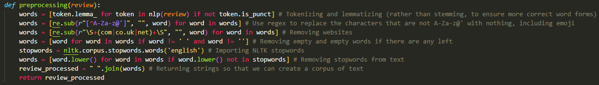

This is just a small portfolio piece to demonstrate skills in web scraping and sentiment analysis, using BeautifulSoup, Pandas, Sklearn, and NLTK/spaCy. This started initially as just a sentiment analysis project, but I decided that I wanted an original data set to demonstrate my skills and build a model, and so I taught myself web scraping as well.
The project is viewable on my Github.
To do the web scraping, I wrote a program called scraper.py, which started with the main page for Goodreads’ best romance books of 2022, which shows the cover of each book with a link to the review page, as well as the top voted book of the year, Book Lovers by Emily Henry. From there, I populated an empty list that found all of these review links, and created empty lists for each of the different variables that I wanted to include, as well as integers to increment for the book id and review id.
For each of the links in my list of links, I used BeautifulSoup to extract the HTML of the page, and first collected the book’s title and author, and then a list of reviews. Since I chose not to collect all the reviews, I only collected the first page for each, which was 30 reviews per book, so 600 reviews in total. For each review, I extracted the text, and appended it to the list that would become part of my dataframe. Then, I found the names of all the reviewers, extracted the screen name, and added those to my list of review authors. At that point, I also added and incremented the review id, and added the book title, author, and book id (which got incremented for each link, rather than for each review). I then extracted the review date, converted it to Python datetime, and added those to the list of review dates. The final task was to find the rating, which involved accessing the attributes of the tag rather than finding the review score in text. However, I realised that not all reviews had a rating, and some were marked with “Read”, “Want to read” or “Shelved as…”. For those, I had to insert None into my list of ratings. For the ratings, which were formatted in the label as “Rating x out of 5,” I indexed the string to extract the number, and added that to the list of ratings.
The lists that I created for this were as follows:
These lists were compiled into a dictionary of lists, which was then converted into a pandas dataframe, and then using df.to_csv() I created the .csv file “scraped.csv”. I could have conducted the sentiment analysis with the dataframe in scraper.py, but I wanted to save the csv and upload it to Kaggle, as well as conduct the sentiment analysis in a different program.
I then created a program called sentimentanalysis.py, which is where I’d use this csv data to see if I could model whether reviews were positive or negative. First, I loaded an instance of spaCy, and read the csv file as a pandas dataframe. I knew that some of the reviews did not have a rating, so I made sure to eliminate those rows from the dataframe before proceeding, as these would be useless in conducting sentiment analysis.
I then iterated through the dataframe to see what distribution of ratings there were. Of the 562 reviews that had a rating, 55 were one star, 88 were two star, 82 were three star, 152 were four star, and 185 were five star. This can be visualised using a quick graph made in Tableau. This balance of reviews was used as the deciding factor in where to include the three star reviews in binary sentiment classification. If they were positive, it would create a massive imbalance in positive versus negative reviews, and while that might make the model more accurate, it would be at the expense of negative review identification, just through probability that a review is positive or negative. Therefore, these reviews were classed as negative. An extra column was added into the dataframe that made all reviews of three stars or below into negative (0) and four or five stars into positive (1).
The next step was to conduct text cleaning and preprocessing. For this, I used regular expressions and NLTK functionalities to tokenize and lemmatize text, as well as removing stopwords, website links, and empty words. The list of words for each review was then joined into a single string, and the list of cleaned reviews was added into a column in the dataframe.
Following this, the text was vectorized using a TF/IDF vectorizer, which produces higher accuracy than a Bag of Words model generally, but is also well-suited to the reviews, since they were of greatly varying length.
First, a logistic regression was conducted where the x data was the vectorized text, the y data was the binary positive or negative, and the train/test split was 75% training to 25% test. Shuffle was set as false, so that the results are replicable. The accuracy of the model in this case was 75.89%. When the three-star reviews were set as positive, the accuracy jumped to 80.14%, but the imbalance of positive and negative reviews is a crucial consideration when evaluating model performance. However, with there only being 562 reviews, which is an extremely small dataset for sentiment analysis, I was satisfied with a 76% accuracy score.
Following this, I decided to investigate whether it would be possible to predict the specific star rating of the review. Using a similar logistic regression to what I had used before, except using the star rating of the review instead of a binary positive/negative, the model only achieved 30.50% accuracy. When shuffle was allowed, the model performed as well as 45% accuracy, but it was more useful for the results to be replicable. A confusion matrix showed that most reviews were classified as five-star reviews, which is likely due to the imbalance of ratings in the dataset.
The main limitation here was that the dataset was incredibly small, and rather imbalanced, and a future attempt could use a much bigger dataset; each book had around 10000 reviews, and that would have made sentiment analysis much easier. There would still remain the issue of an imbalanced number of star reviews, but such a large dataset would allow us to cut out some reviews to make it balanced without that being at the expense of the model’s accuracy.
That being said, I was quite surprised with the performance of the binary model using such a small dataset! This clearly shows us that logistic regressions using preprocessed and vectorized text are a really good means of analysing the sentiment of reviews.